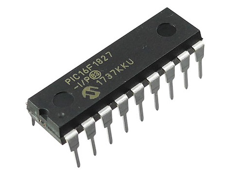

PIC講習/準備
概要
今回は、PICを使う前の準備をします。
重要語
PICマイコン
電子工作用の小型コンピュータの一種
機械語
コンピュータが読む言語
アセンブリ言語
機械語に近いプログラミング言語
コンパイル
プログラミング言語を翻訳すること
コンパイラ
コンパイルを行うプログラム
PICkit
PICマイコンとPCを繋ぐ機器
IPE
PICkitを操作するソフトウェア
必要語
今回の必要語はありません。
PICマイコン
PICピックマイコンは、Microchip社が製造している小型のコンピュータです。
電子工作に組み込むためのサイズや機能をもち、値段も安いです。
プログラム次第で、複雑な機能も実現できます。
PIC16F1827
PICマイコンには非常に多くの種類がありますが、今回はこれを使います。
18本のピンを持ちます。
同じ機能で低電圧版の、PIC16LF1827などもあるので、間違えないようにしてください。
物理部では既に用意しているので、気にしなくてもよいです。

アセンブリ言語
本講習では、アセンブリ言語を使ってプログラムを書きます。
機械語
機械語とは、コンピュータが読む言語のことです。
画像のように、数値で記述しなければならず、人間が書くのには向きません。
ちなみに、このプログラムはLCDに文字を表示します。
アセンブリ言語
人間にも読み書きしやすい形になった機械語が、アセンブリ言語です。
アセンブリassemblyは、原始的などという意味を持ちます。
プログラミング言語の中では、最もコンピュータの動作に近い言語です。
コンパイル
アセンブリ言語を含め、機械語以外の言語は、コンピュータには読めません。
そこで、機械語に翻訳する必要があります。
この作業を、コンパイルといいます。
アセンブリ言語の場合には、アセンブルということもあります。
コンパイラ
コンパイルは人間が行うこともできますが、時間がかかる上、間違いなども起こりやすいです。
現代では、ほとんどの場合、コンパイラと呼ばれるプログラムにコンパイルさせます。
アセンブルに対応して、こちらもアセンブラということがあります。
今回の講習では、KTPCPICASMというコンパイラを用意しました。
物理部のPCにはすでに入っているはずなので、何もしなくてよいです。
個人のPCでは、こちらのリンクからダウンロードしてください。
そして、デスクトップなどに適当な名前を付けたフォルダを用意して、解凍してください。
最初の実行時には警告が出ると思いますが、続行してください。
PICkit
PICkitピックキットは、PICとPCを繋ぐ中継機です。
プログラムはPCで書きますが、PCとPICを直接繋ぐことはできません。
PICにも無線通信機能などないので、中継機が必要になります。
PICkitとPCはUSB、PICkitとPICは次章の変換基板で、それぞれ繋げます。
PICkit3とPICkit4
物理部では、PICkit3という赤いPICkitを使っています。
しかし、現在販売されているものは1世代後のPICkit4です。
動作が速くなったそうですが、今回の講習の範囲にはほとんど影響しません。
IPE
PICkitに様々な指令を与えるアプリケーションが、IPEアイピーイーです。
Microchipのサイトからインストールしてください。
これも、物理部のPCには既に入れてあります。